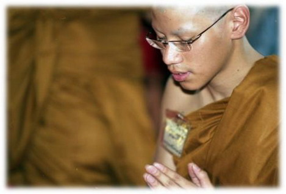
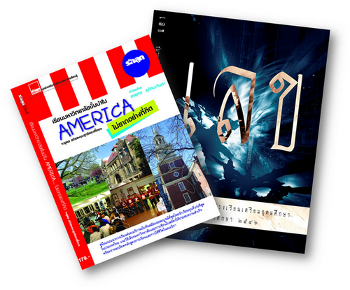

FAQ
So your full name is Jarupon Sathirapongsasuti. Where do you get "Fah" from?
It's a Thai custom for parents to name their kid a nickname separate from a first name. "Fah" is my "given" nick name.
I saw a picture of you in a monk robe. Are you a monk?
No, I am not a monk. But I received full ordination from the Sangha of Wat Bowonniwet Vihara in the summer of 2008. Prior to that I have been in and out of the robe as a novice monk several times since I was nine. Becoming a monk for a finite period of time is a form of moral training in Thailand. During my monastic time, I completed the highest level of Sanam Luang Dharma Study curriculum (customarily for monks of ten vassas and over) when I was fourteen, becoming one of the youngest to pass the exam.
You wrote books?
In senior year of high school, I served as the president of my high school's mathematics club. Because our high school (Traim Udom Suksa School) was well-known, and we had a lot of talented math students in the club, we afforded the credibility to publish a handbook for high school's mathematics. I contributed a fair bit of the book and served as an editor. The book title is "lek" (literally "math"). The book was distributed by Chulalongkorn University Book Center, which has branches nationwide.
In summer between my high school and college, I had a couple of months free before college started, so me and my friends, who were free and also waiting for school to start, got together and wrote a book on how to get into American colleges. We did this to fill the gap for Thai students to learn about the specifics of American college admissions system. I was the editor and one of the main contributors of the book, so they put my name on the cover as "Jarupon Sathirapongsasuti and friends".
The book was published by Rakluke Family Group, a leading Thai publisher, and was distributed nationally by SE-ED. It was so well received that the publisher published it twice, and the book became a bestseller in educational category.